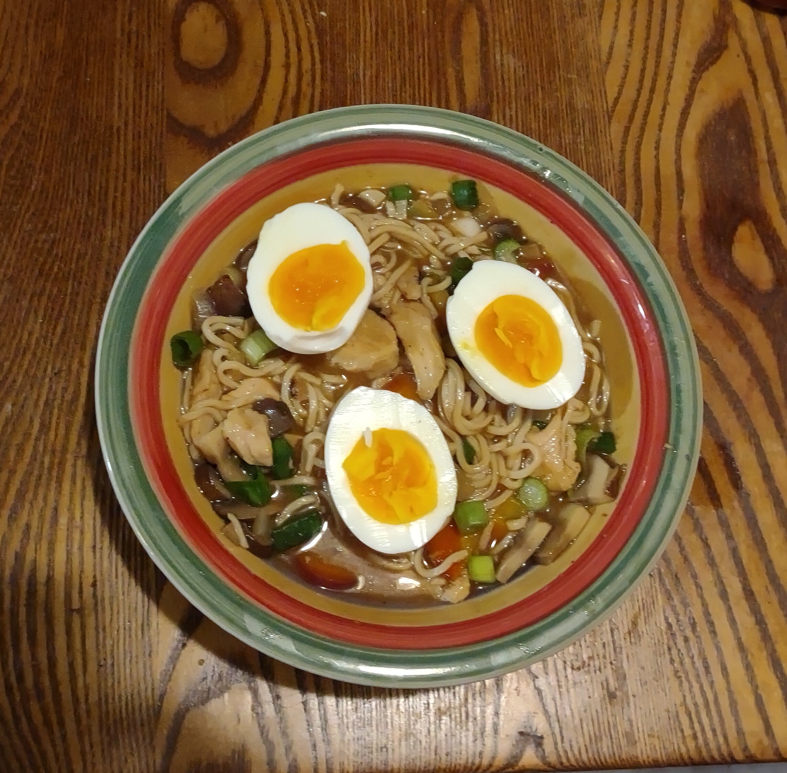

Ramen Recipe

Description
Ramen is a Japanese noodle soup. It consists of Chinese-style wheat noodles served in a meat or fish-based broth, often flavored with soy sauce or miso, and uses toppings such as sliced pork, nori, menma, and scallions.
Ingredients
- 4 cups water
- 8 ounces sliced fresh mushrooms
- 1 bunch green onions, thinly sliced, divided
- 1 large carrot, sliced
- ½ yellow onion, sliced
- 2 tablespoons soy sauce
- 2 tablespoons minced garlic
Steps
- Combine water, mushrooms, 1/2 the green onions, carrot, onion, soy sauce, garlic, sriracha sauce, sesame oil, rice wine vinegar, white pepper, black pepper, and flavor packets from ramen in a large pot. Bring to a boil. Add noodles and cook, stirring occasionally, until noodles are tender yet firm to the bite, about 5 minutes.
- Reduce heat to a simmer and cook until vegetables are tender, about 10 minutes. Serve topped with remaining green onions.